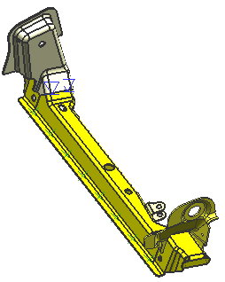

使用电子表格文件(*.csv 格式)从其它焊接或中转系统中导入焊接位置。
显示焊接助理工具条。
点击工具条上的导入 CSV 文件 。
选择 wld1_import_weld_csv.csv 并点击确定。
焊接已被导入。

如果出现导入信息框，点击是。
|
注意 |
当您通过*.csv(comma separated value)文件导入点时，它们将丢失它们的相连部件信息并保持“保留的”状态，当 NX 点焊特征的相连面链接不再存在时，也会出现“保留的”状态。焊点将保留相连的部件信息，但丢失了装配内部的位置信息，连接面查找器可以让您快速识别相连的部件，并移除它们的“保留的”状态。 |
在部件导航器中，查看已经导入到这个装配中的焊接。
如果可以看到钣金和已经连接的部件数的相关信息，点焊将会根据这些信息被分组并放置到一个特征集中，如果没有，将由单个点构成特征集。
右击任意保留的焊接特征并选择属性，以查看特征属性列表。
取消对话框。